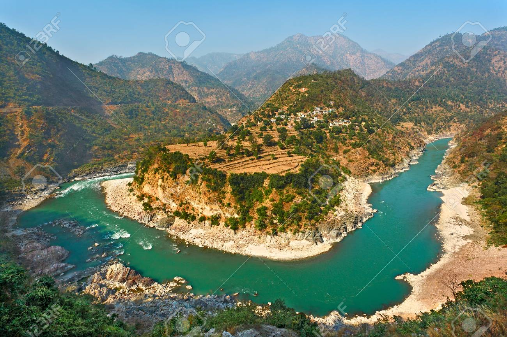
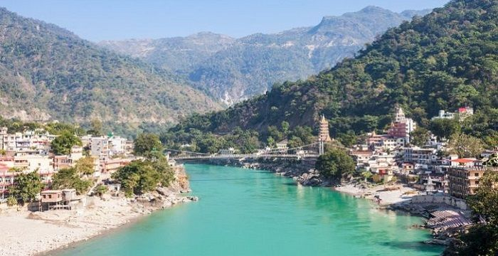

The Alaknanda is a turbulent Himalayan river in the Indian state of
Uttarakhand and one of the two headstreams of the Ganges, the major
river of Northern India and a river considered holy in Hinduism. In
hydrology, the Alaknanda is considered the source stream of the
Ganges on account of its greater length and discharge;[1] while, in
Hindu tradition and culture, the other headstream, the Bhagirathi,
is considered the source stream.
Read more...

Devprayag (Deva prayāga) is a town and a nagar panchayat, near New
Tehri city in Tehri Garhwal District[1][2] in the state of
Uttarakhand, India, and is the final one of the Panch Prayag (five
confluences) of Alaknanda River where Alaknanda meets the Bhagirathi
river and both rivers thereafter flow on as the Ganges river or
Ganga.
Read more...

The Ganges is a lifeline to tens of millions of people who live in
its basin and depend on it for their daily needs.[13] It has been
important historically, with many former provincial or imperial
capitals such as Pataliputra,[14] Kannauj,[14] Sonargaon, Dhaka,
Bikrampur, Kara, Munger, Kashi, Patna, Hajipur, Delhi, Bhagalpur,
Murshidabad, Baharampur, Kampilya, and Kolkata located on its banks
or the banks of tributaries and connected waterways. The river is
home to approximately 140 species of fish, 90 species of amphibians,
and also reptiles and mammals, including critically endangered
species such as the gharial and South Asian river dolphin.[15] The
Ganges is the most sacred river to Hindus.[16] It is worshipped as
the goddess Ganga in Hinduism.
Read more...